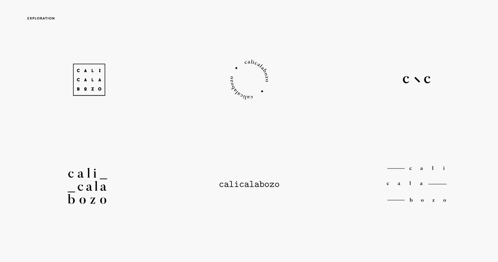

calicalabozo - calicalabozo - calicalabozo
We created an interactive website that promotes and represents the cultural identity/aspects from the city that the writer Andrés Caicedo has inside his books and short stories.
Art Direction · Development · Ui · UX · Motion Graphics

01. Research
Our research showed that the best way to grab our audience's atention was through a website that recolect all the info about the autor. We divided the navigation three sections, each one has an experience related to the writer and references to the city and culture inside his books.

Brand
We looked for a contemporary style with some vintage touch to keep the essence of the age and be cool for our audience at the same time.

02. The Website
03. Biography
This timeline contains information about all the writer's path in order to give context to the users and to know I little bit more about the author. Users have the option to read the short stories and see pictures or videos related to that period of time.

04. The Experience
Inspired by the stories inside the books, we created four different interactions that represents an aspect of the cultural identity. Each section ends with an option to share the experience on social media and get an item to collect.
05. Interactive Map
The interactive map shows the users how the city has changed with a before/after of the places - some of them don't exist any more - that are mentioned by the writer on his books and short stories.